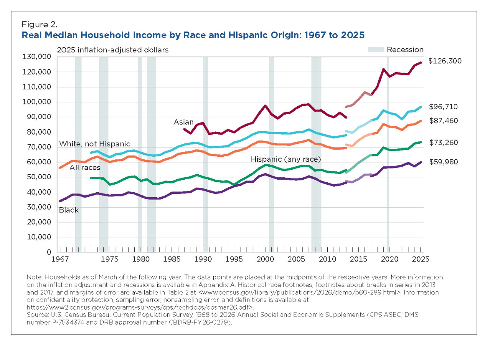
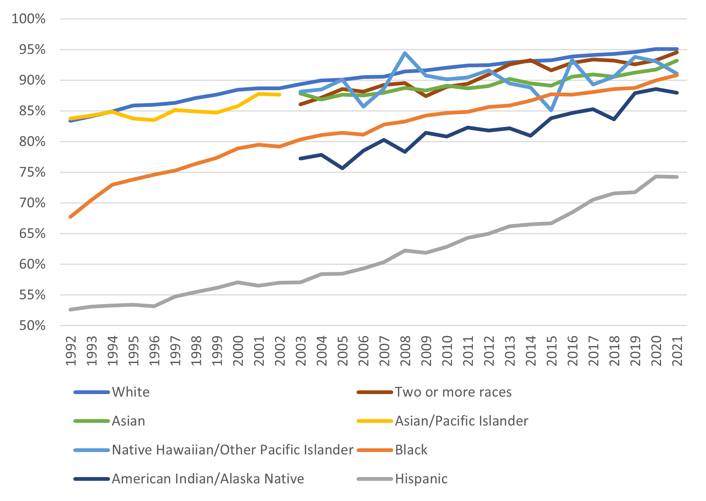
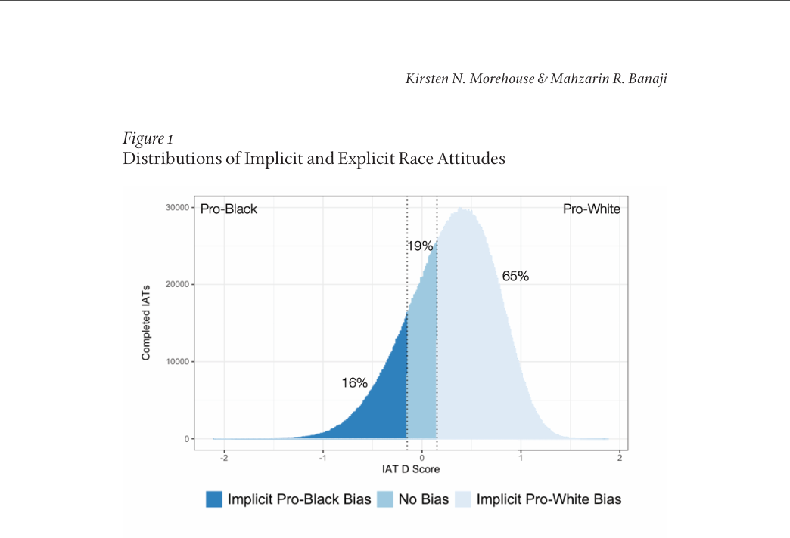
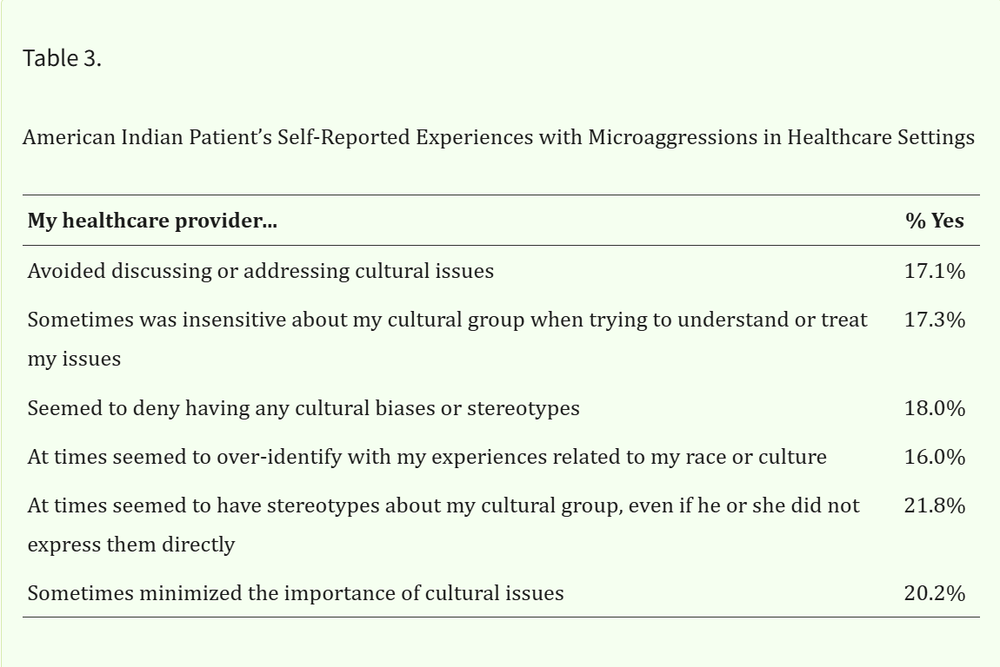
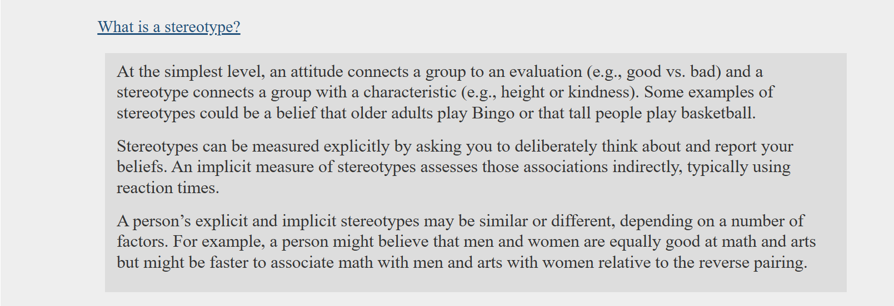
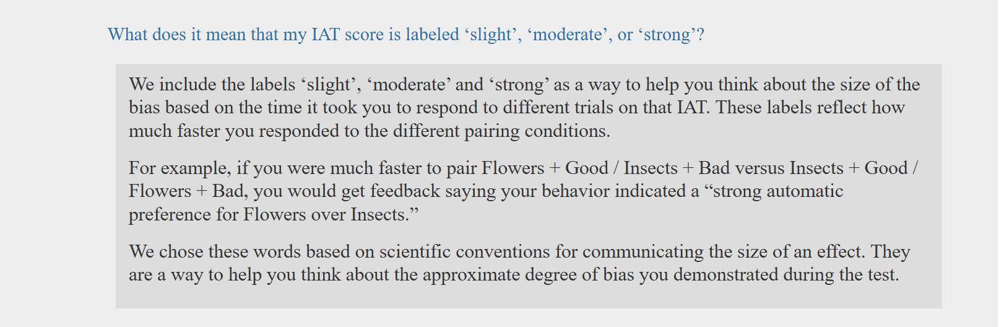

According to Patricia Hill Collins and Sirma Bilge (2016), intersectionality is "a way of understanding and analyzing the complexity in the world, in people, and in human experiences. The events and conditions of social and political life and the self can seldom be understood as shaped by one factor. They are generally shaped by many factors in diverse and mutually influencing ways. When it comes to social inequality, people's lives and the organization of power in a given society are better understood as being shaped not by a single axis of social division, be it race or gender or class, but by many axes that work together and influence each other."
The ways that various axes of identity overlap and influence each other in relation to social inequality is a very important component of this definition. It is difficult to deny the fact that social inequality exists within our world. For example, according to the US Census, while household income has slowly increased over the past 6 decades for all Americans, median household income, as of 2025, is still clearly and drastically divided along racial lines. Another example is educational disparities. According to the US Department of Treasury, Hispanic households have the lowest high school completion rates, followed by those under the category of "American Indian/Alaska Native", with indivduals who are categories as White and "Two or more races" competing at the top.


With this in mind, it might be easy to blame people of color for these outcomes. However, it is important to remember that, while people have free will and agency, it is all shaped by where in the world they are born, who they are born as, what abilities people are born with, the social structures surrounding them and what actions this society allows or inhibits, the history undergiding this society, and how that all overlaps in the everyday realities and lived experiences of the people that make up these statistics.
Intersectionality is a framework that allows us to pay attention to these histories, realities, and distinctions that are informed by the overlapping factors of one's identity. Due to existing in this society, people sometimes pick up on the normative thought patterns and structures that justify forms of ongoing inequality, leading what scholars, activists, and professionals have termed "implicit bias". Continue into the next section to learn more about implicit bias and some tests that have been developed that help us better understand how it operates and how we can combat it.
Implicit bias is the internal prejudice against groups, particularly of minority backgrounds, either due to enivronment or personal belief and physical experience. An example of implicit bias in the United States today is prejudice against Black Americans, where White American's have an above average rate of associating Black people with more negative connotations. It is an internal prejudice due to the harmful associations that lead to real world social interactions.

Implicit bias is not just a one time thing either as people from more privileged backgrounds take these biases with them and use that dominanace to discriminate against vulnerable groups. Another example for implicit bias like this is for Native Americans, who face daily microaggressions from these biases. Historically and currently, these biases have either been ignored as an issue or minimized due to societal pushback and for the benefit of more priviliged groups from losing social power and increasing minorirty influential recognition and power.

The chart shows that these microaggressions are in all corners of life and this cuts deep into motivation and to the denial of native americans suffering in the United States. This also goes for other underrepresented minority groups.
The implicit bias test allows people to understand how and why implicit bias may be creeping into their own way of viewing others in the world. Ideally, this test can help open your eyes to the implications of intersectionality. This test helps us understand how interactions between and amongst groups of people can cause discrimination, but also how these forms of discrimination can be mitigated or prevented.
The implicit bias test can be a good way to measure stereotypes. Stereotypes are like mental shortcuts that tend to over-generalize and group entire populations of people together based on perceived behavior.

Stereotypes can technically be either positive, negative, or even neutral. It often begins very subtly. For example, believing that all women are "naturally caregiving" or that all Black people are good at sports. However, it can often grow more pernicious and dangerous, and has led to extreme forms of injustice and inequality, including within digital technologies. The intersectionality bias test is a helpful resource for starting to investigate these biases.

The implicit bias test measures the potential strength of bias in a tiered format. This is useful because it allows us to compare our own believes to that of the wider population. It also allows us to explore and understand (NOTE: I WILL CONTINUE TO MAKE A FEW UPDATES HERE AND ADD A BIT MORE LANGUAGE) strength in different tiers because another important part of seeing discrimination and stereotypes is going through the weights of how the population feels about a underepresented group of people. Having a significant part of the population be moderatley discriminatory does not mean that it is less harmful but that it is more hidden and casual for bad sterotypes and actions to take place.
Learn more about these tests, or take your own here: